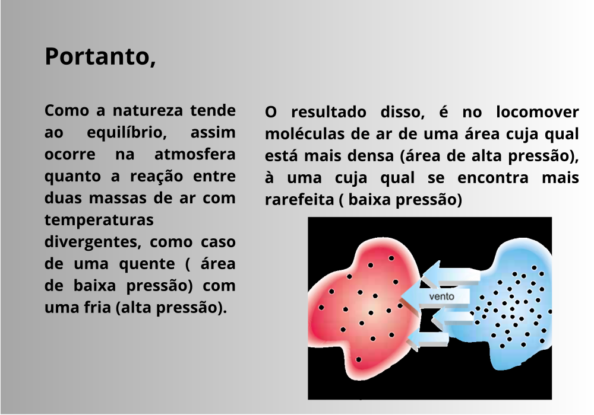
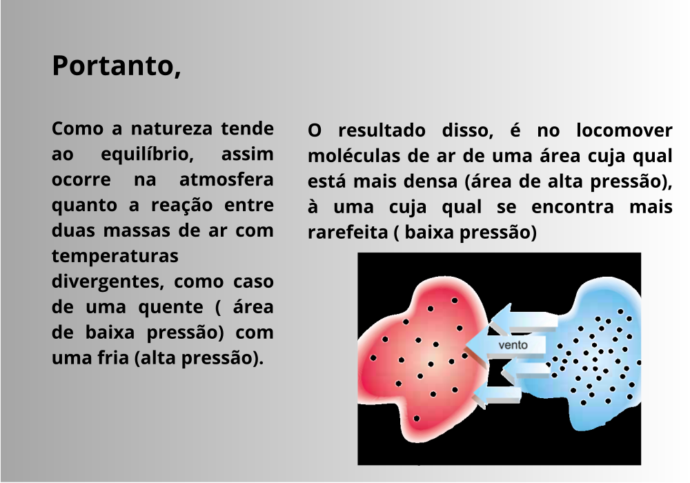

Radiação Solar
Antes de começar a de fato falar dos ventos, importa falar do seu principal aspecto causador (Radiação Solar)


Pressão atmosférica
Aprofundando-se mais um pouco, veremos brevemente a chamada pressão atmosférica, que importa, antes de falarmos propriamente sobre estes, comentarmos sobre as áreas de alta e baixa pressão.


Relações entre Radiação Solar e Pressão atmosférica
A partir do que já foi analisado, convém falar de suas Relações
 

Curiosidades
Abaixo, veja em específico um dos muitos tipos de ventos que ocorrem na atmosfera.